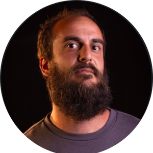

Federico Mastrascusa
Ingeniero Industrial con mas de 9 anios de experiencia en control de gestion y analisis financiero. Especializado en Business Intelligence y automatizacion de procesos.
Somos cuatro profesionales de Mendoza que trabajamos la tecnologia aplicada a la gestion. Si estas cansado de las planillas sueltas y de los procesos a mano, hablamos el mismo idioma.
Ingeniero Industrial con mas de 9 anios de experiencia en control de gestion y analisis financiero. Especializado en Business Intelligence y automatizacion de procesos.
Analista y desarrollador de sistemas con experiencia en plataformas web y mobile. Define como trabaja el equipo, escribe la documentacion tecnica y lleva el desarrollo de punta a punta, desde la idea hasta el producto final.

Ingeniero Industrial con MBA. Fundador de Scubalight Studios (animacion y videojuegos) y Etrex Producciones (esports), y coordinador del cluster Game Andes junto a la Fundacion ICBC. Mas de 8 años metido de lleno en la industria de los videojuegos en Mendoza.
Hizo el curso full stack en Egg Educacion, con formacion intensiva en Java, MySQL y JavaScript. Hoy sigue capacitandose en distintas plataformas, enfocado en el desarrollo back-end.